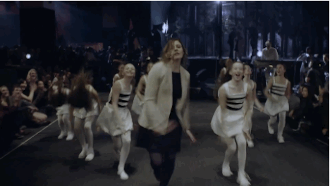
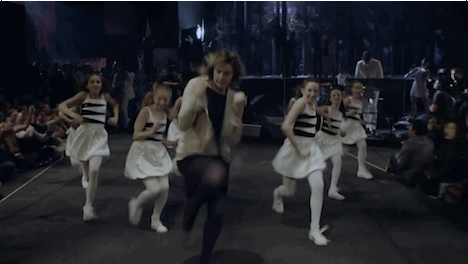

animated webcontent
A look on three different approches for displaying animated content on the web
Animated Gifs
Animated Vevo Gif (480x220px, ~ 948KB)
30 animation frames for littel more than a second of animation with one MB file size
HD Size (1920x1080px, 15,3MB, 12fps, ~2,21s)

This is our basic test image as an animated gif that has been extracted from an HD video at its full size. (Displayed smaller for your convenience, click link above for full size)
Big-Sushibar-Size (468x264px, 1,7MB, 12fps, ~2,21s)
This is the same clip with dimensions to exactly match those of the large images within the one-big-four-small sushibars
HD Size (1920x1080px, 14,5MB, 12fps, 1s)

Another animated gif at full size, precisely 1 second long, and hence closer to the source example
Big-Sushibar-Size (468x264px, 1,6MB, 12fps, 1s)
Same idea as above, but in a scene which contains many changing parts. Observe that compared to the clip that is almost double the length of this one there is only negligible reduction in file size.
Small-Sushibar-Size (228x129px, 477KB, 12fps, 1s)

Same negligible reduction in file size is observable at smaller image sizes
HD Size Reduced Movement (1920x1080px, 11,3MB, 12fps, 3s)

{kind=link}
Another scene which contains only little movement. Notice the further decrease in file size, even when increasing the clip length.
HD Size Reduced Movement (1920x1080px, 4,2MB, 12fps, 1s)

Here we are at about one second, which is an equivalent of 12 frames